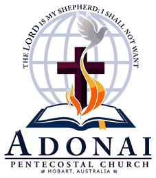

ADONAI PENTECOSTAL CHURCH · HOBART
A church family growing together in Christ.
We are a Malayalam-speaking Pentecostal church in Hobart, Tasmania. Whether you are new to the city, exploring faith or looking for a church family, you are welcome here.
WELCOME
Faith. Family.
Fellowship.
Adonai is a church community centred on Jesus Christ, grounded in God's Word and committed to prayer, worship and discipleship.
Our services are primarily in Malayalam, with English translation available. Families, children, young people and visitors from every background are warmly welcome to worship with us.
Read about Adonai →LIFE AT ADONAI
Growing in faith, together.
Church life extends beyond a Sunday service. Through worship, Bible teaching, prayer, youth ministry, children's programmes and fellowship, we want every generation to know Christ and grow in Him.
See life at Adonai →OUR MINISTRIES
A place for every generation.
Opportunities to learn, worship, build friendships and serve together throughout church life.
PRAYER AT ADONAI
Seeking God together.
Each Saturday we gather online for an hour of intercessory prayer for individuals, families, our church, our community and the world.
YOUR FIRST SUNDAY
New to Adonai?
You do not need to know anyone before you come. If you would like help planning your first visit, send us a message and our church family can help with service information, directions and any questions you have.
Plan your visitSunday School
9:00 AM – 10:00 AM
Worship
10:00 AM – 12:30 PM
Language
Malayalam · English translation available
Location
Lenah Valley, Hobart, Tasmania
